Demeter: A Scalable and Elastic Tiered Memory Solution for Virtualized Cloud via Guest Delegation
This page was written by an AI model to give a high-level overview of the paper. Please check the paper for detail: ACM Digital Library.
Server memory capacity is not keeping up with core counts. The paper cites a decade in which flagship server CPUs grew core counts about tenfold (from 15 to 144 cores) while maximum DRAM capacity grew only about 2.67 times (from 1.5 to 4 TB), cutting memory per core by roughly a third. Cloud providers (Azure, Google, Facebook) respond with tiered memory: a fast tier (FMEM, DRAM) backed by a larger, slower tier (SMEM) built from Persistent Memory (PMEM) or Compute Express Link memory (CXL.mem), which can double capacity at roughly half the cost of equivalent DRAM. The open problem is tiered memory management (TMM): deciding, continuously, which pages belong in which tier.
In virtualized clouds, existing TMM is hypervisor based: the host tracks guest memory accesses by reading and resetting Page Table Entry Access/Dirty (PTE.A/D) bits inside the Extended Page Tables (EPT) that back each guest. The paper's own measurements show this costs dearly. Because the hypervisor only sees guest-physical addresses, it cannot target single-address TLB invalidation and must fall back to full EPT invalidation on every scan; in a GUPS (Giga Updates Per Second) stress test this produced 4.7 times more TLB flush instructions and 2.5 times the execution time of an equivalent guest-side scheme. Separately, Processor Event-Based Sampling (PEBS), the hardware access-tracking mechanism used by the best kernel-based tiering systems, was long believed unusable across the virtualization boundary, closing off that option to hypervisor-based designs entirely.
Demeter's key move is to stop trying to do TMM from the host at all. It delegates the entire three-step TMM pipeline (access tracking, hotness classification, data migration) into the guest kernel, and leaves the hypervisor responsible only for tiered memory provisioning (TMP): elastically handing out FMEM and SMEM capacity. Two insights make this attractive. First, a guest kernel sees its own virtual addresses and one-dimensional page tables, so it can use cheap, single-address TLB invalidation instead of the hypervisor's destructive full flushes. Second, the paper finds (contrary to prior assumptions) that PEBS is now EPT-friendly: an architectural bug that once made it unsafe under memory overcommitment was fixed in PEBS version 5, and the sample buffer is guest-private by construction (via the vmcs.debugctl field), so a guest can sample its own loads and stores in guest virtual addresses with hardware isolation from other VMs.
Demeter's guest kernel module drains EPT-friendly PEBS samples at every process context switch (no dedicated polling thread), feeding guest virtual addresses directly into a range-based, segment-tree-like classifier that splits hot virtual-address ranges into finer sub-ranges and merges cold ones, because the paper finds that guest virtual address space preserves spatial locality that is scrambled once pages are placed by the kernel's physical-page allocator. Hot and cold pages identified this way are then exchanged in balanced, one-to-one promotion and demotion batches, avoiding the temporary buffer pages that trigger reclamation pressure in prior designs. On the host side, a new "Demeter balloon" exposes FMEM and SMEM as two virtual NUMA nodes and lets the hypervisor inflate or deflate each one at page granularity and fully asynchronously, preserving cloud elasticity and QoS control without the hypervisor ever inspecting guest access patterns.
Across seven real-world workloads (databases, scientific computing, graph processing, machine learning) on DRAM+PMEM and DRAM+emulated-CXL.mem testbeds, Demeter improves performance by up to 2 times over hypervisor-based TMM and by 28% on average (geometric mean) over the next best guest-based alternative (TPP). Its elastic provisioning mechanism alone improves throughput by up to 68% over a tier-unaware VirtIO balloon.
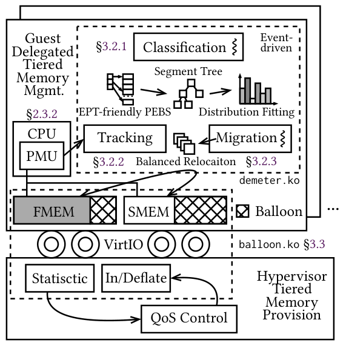
Key takeaways
- Hypervisor-based tiered memory management forces full EPT TLB invalidation on every PTE.A/D scan because the host cannot recover guest virtual addresses, producing 4.7 times more TLB flushes and 2.5 times the runtime of a guest-side scheme in the paper's GUPS test.
- EPT-friendly PEBS, long assumed broken across the virtualization boundary, works and is isolated per guest since PEBS version 5; Demeter is the first system to use it for guest-level tiered memory tracking.
- Demeter delegates all of tracking, classification and migration to the guest kernel, and keeps only elastic provisioning (the "double balloon") in the hypervisor.
- A range-based classifier operates in guest virtual address space (not physical address space) because the kernel's lazy, fragmentation-minimizing page allocator destroys locality in physical addresses.
- Up to 2 times faster than hypervisor-based TMM, 28% faster on average than the best guest-based alternative, and up to 68% faster provisioning than a tier-unaware VirtIO balloon.
From hypervisor scanning to guest-delegated tracking
Two-dimensional address translation and why it is costly, the PEBS misconception, the guest-delegation split, and each stage of Demeter's guest-side pipeline. Results are in the Evaluation tab.
1 · Two-dimensional address translation in a VM
Each virtual machine has its own guest virtual address (gVA) to guest physical address (gPA) mapping, maintained by the guest's own page tables (GPT). The hypervisor adds a second mapping, gPA to host physical address (hPA), through Extended Page Tables (EPT) on Intel or Nested Page Tables (NPT) on AMD. Every guest memory access therefore needs a two-dimensional page table walk: up to 25 memory accesses given modern 57-bit gVAs and 52-bit gPAs with 5-level translation in each dimension. TLBs cache both one-dimensional (gVA to gPA) and flattened two-dimensional (gVA to hPA) mappings to avoid repeating this walk, but any PTE modification requires a TLB flush, re-triggering the expensive walk on the next access.
TLB flush instructions come in two kinds: full invalidation (invept), which drops every entry tied to a given EPT, and single-address invalidation (invvpid/invpcid/invlpg), which drops only the entries for one address. Single-address invalidation is far cheaper, but it requires knowing the gVA being invalidated.
2 · Why hypervisor-based TMM pays for full invalidation
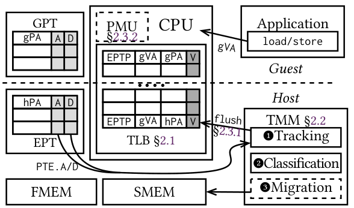
Existing hypervisor-based TMM pipelines (HeteroVisor, HeteroOS, RAMinate, vTMM) track hotness by reading PTE Access/Dirty (A/D) bits set automatically during address translation, in either GPT or EPT, and periodically reset them to detect new accesses. Because these systems observe memory only through GPT or EPT entries, which contain gPA and hPA but no gVA, they cannot issue single-address invalidation and must fall back to full EPT invalidation to guarantee that future accesses are captured. The paper quantifies this: converting the kernel-based TPP into a hypervisor-based variant (TPP-H) that reads PTE.A bits through KVM's MMU notifier produces 4.7 times more TLB flush instructions than an equivalent guest-based scheme, and 2.5 times the total GUPS execution time. Classification on top of this tracking is also coarse: hypervisor-based systems sort or LRU-rank access frequencies gathered in physical address space.
3 · The PEBS misconception, and why it no longer holds
Kernel-based tiering systems (HeMem, Memtis) get much higher-fidelity hotness data from Processor Event-Based Sampling (PEBS), a hardware mechanism that records load/store samples without software scanning or TLB disruption. Prior tiered-memory work for virtualized clouds assumed PEBS could not be used safely inside guest VMs, for two reasons: an architectural bug where a PEBS buffer write could not tolerate an EPT page fault without risking a machine fault (a problem under memory overcommitment, where EPT entries are populated lazily), and a fear that guest PEBS samples would be written into the host's shared PEBS buffer, leaking load/store addresses across VMs. The paper shows both concerns are resolved: the fault-interruption bug was fixed in PEBS version 5, and the PEBS sample buffer is actually part of the per-VM virtualized CPU debug-control state, switched automatically via the vmcs.debugctl field on VM-entry, so each guest's samples land only in its own private buffer.
4 · The guest-delegation split: TMM in the guest, TMP in the host
Demeter's architecture moves the full TMM pipeline (tracking, classification, migration) into the guest kernel, which can use EPT-friendly PEBS and single-address TLB invalidation, and leaves the hypervisor with only tiered memory provisioning (TMP): elastically sizing how much FMEM and SMEM capacity each VM has. This also solves a scalability problem: naively dropping existing kernel-based tracking (PTE.A/D scanning as in TPP, or PEBS as in Memtis) into every guest on a multi-tenant host compounds overhead as VM count grows, which is why Demeter further redesigns each pipeline stage for low, near-constant per-VM cost (see Evaluation).
5 · Locality lives in guest virtual address space
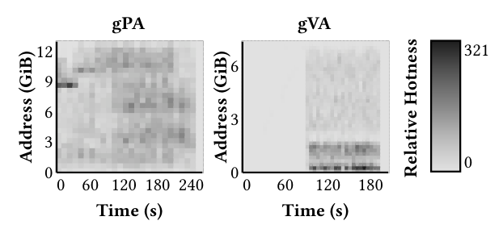
Demeter classifies hotness over guest virtual addresses, not guest or host physical addresses, the reverse of conventional practice. The reasoning: the kernel's physical page allocator optimizes for reduced fragmentation and performs lazy allocation (mapping a physical page only on first access), so physical memory layout reflects the temporal order of allocation rather than any spatial locality in the application's access pattern. The paper demonstrates this directly: profiling LibLinear with DAMON in both address spaces shows the hottest virtual-address region concentrated in small, contiguous ranges, while the corresponding physical-address accesses are scattered across the entire usable memory space.
6 · Range-based hotness classification
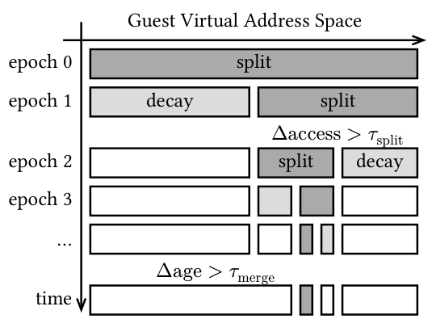
Demeter tracks hotness with a segment-tree-like structure over two regions of guest virtual address space: the heap (growing up from start_brk) and the mmap region (growing down from mmap_base); code, data and stack segments are excluded as inherently hot and small. Every split epoch (default 500 ms), the system checks each leaf range against its neighbors using a significance factor α = Δaccess / (τsplit · vcpu), where Δaccess is the access-count gap to a neighbor, τsplit is a tunable split threshold, and vcpu is the VM's virtual CPU count. A significant range is split in half, with the parent's access count divided evenly and two age fields recording creation time and last-access time; access counts are halved every epoch so cold ranges decay to zero. Splitting stops at a minimum granularity of 2 MiB. Ranges whose access counts have decayed to zero and that have survived τmerge further splits are merged back together, keeping the total number of tracked ranges small (the paper estimates fewer than 50 ranges even for a 64 TiB address space reaching 2 MiB granularity). After splitting, ranges are ranked by access frequency divided by size (ties broken by creation age), and the hottest ranges, up to FMEM capacity, are selected for placement in the fast tier.
7 · Scalable EPT-friendly PEBS sampling
Rather than translating every PEBS sample's virtual address to a physical address and recording hotness in an auxiliary physical page-table structure (as HeMem and Memtis do), Demeter feeds the gVA in each sample directly to the range classifier, skipping address translation entirely. To avoid the CPU waste caused by Performance Monitoring Interrupts (PMIs) firing whenever the PEBS buffer overshoots between polls, Demeter fixes the sampling frequency (rather than adjusting it dynamically) and drains the buffer at every process context switch instead of running a dedicated polling thread, feeding samples through a lock-free multi-producer single-consumer channel. It triggers on the media-agnostic memory load latency event (MEM_TRANS_RETIRED.LOAD_LATENCY) rather than tier-specific cache-miss events, filtering out cache hits with a latency threshold set via the MSR_PEBS_LD_LAT_THRESHOLD register (64 ns on the evaluation platform) so that samples reflect genuine memory-tier accesses regardless of whether SMEM is PMEM or CXL.mem.
8 · Balanced page relocation
Given the ranked ranges, Demeter finds the largest prefix index f whose combined page count fits in FMEM, then migrates in three phases: (1) walk hot ranges (indices below f) to build a promotion list of m pages currently misplaced in SMEM; (2) walk the coldest ranges in reverse to build a demotion list of exactly m pages currently misplaced in FMEM; (3) unmap, swap the contents, and remap each promotion/demotion pair in batches. Because every demotion is paired one-to-one with a promotion, no intermediate free page is ever needed, unlike sequential migration schemes that first demote to a temporarily allocated page and can trigger kernel page reclamation (via kswapd or direct reclaim) and cascading demotion of hot pages.
9 · Elastic provisioning: NUMA exposure and the double balloon
The hypervisor exposes FMEM and SMEM to the guest as two virtual NUMA nodes via the virtualized ACPI table, with NUMA distance values conveying their relative performance, so guests see tiering through an interface they already understand. The "Demeter balloon" gives each NUMA node its own memory balloon with page-granular (not 128 MiB/1 GiB block-granular) inflation and deflation, each sized up to 100% of total system memory so composition can range continuously from all-FMEM to all-SMEM. Unlike generic balloons, it is tier-aware, so a request to shrink SMEM cannot accidentally reclaim FMEM pages. Operations are fully asynchronous: the hypervisor posts requests over a VirtIO queue, the guest driver dispatches the actual reservation or restoration to a kernel workqueue, and completion is signaled back over VirtIO monitored via epoll(). A separate VirtIO statistics queue reports tier-specific utilization and access-pattern data to the host for cluster-level QoS policies, which the paper leaves policy-agnostic.
10 · Implementation
Demeter is built on Linux kernel v6.10 and Cloud Hypervisor v36. The hypervisor-side double balloon extends the VirtIO memory balloon with mirrored FMEM/SMEM control structures, about 1,000 lines of Rust in the hypervisor and 1,000 lines of C in the guest driver. The guest-delegated TMM component is a standalone Linux kernel module of about 8,000 lines of C, designed to port across kernel versions with minimal changes.
Evaluation
Microbenchmarks isolating each pipeline stage, then seven real-world workloads across DRAM+PMEM and DRAM+CXL.mem, compared against guest-based and hypervisor-based baselines.
Experiments run on a dual-socket 36-core Intel Xeon 8360Y server (3.0 GHz, hyper-threading off, frequency locked), with 4x32 GiB DDR4-3200 DRAM and 4x128 GiB Intel Optane PMem 200 per socket; vCPUs for each VM are pinned to one NUMA node. Each VM gets 4 vCPUs and 16 GiB tiered memory at a default 1:5 FMEM:SMEM ratio. Two tier compositions are tested: DRAM+real PMEM (512 GiB total) and DRAM+emulated CXL.mem using remote NUMA DRAM (128 GiB total, following the Pond emulation methodology), with most results reported for the PMEM configuration for its larger scale.
| What | Value in the paper |
|---|---|
| Microbenchmark | GUPS hotset variant: skewed random read-modify-write, hot region receives 10 times the accesses of the cold region |
| Real workloads | btree, Silo (in-memory OLTP, YCSB), bwaves (SPEC CPU 2017), XSBench, graph500, PageRank (Twitter graph), LibLinear (kdda dataset) |
| Baselines | Guest-based: Memtis, Nomad, TPP; hypervisor-based: TPP-H (TPP's tracking ported to KVM via MMU notifier); provisioning baseline: VirtIO balloon |
| Metrics | GUPS throughput (Mop/s), workload elapsed/execution time, access-tracking CPU overhead (seconds, % CPU), TLB flush instruction counts, YCSB percentile latency (ms) |
Hypervisor-based tracking multiplies TLB flushes and runtime
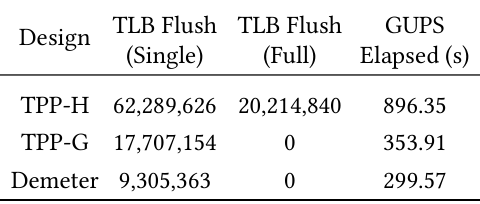
What it shows. Table 1 reports, for a 126 GiB GUPS workload with 36 threads and unlimited PMEM as SMEM, the single- and full-invalidation TLB flush instruction counts and total elapsed time for three designs: TPP-H (hypervisor-based), TPP-G (TPP ported directly into the guest), and Demeter. TPP-H issues 62,289,626 single flushes plus 20,214,840 full flushes and takes 896.35 s. TPP-G issues 17,707,154 single flushes, zero full flushes, and takes 353.91 s. Demeter issues 9,305,363 single flushes, zero full flushes, and takes 299.57 s.
What to take from it. The paper attributes TPP-H's cost to full EPT invalidation: since hypervisor-based tracking sees only gPA/hPA entries, it cannot target single addresses and must flush everything, producing 4.7 times TPP-G's flush count and 2.5 times its runtime. Demeter's EPT-friendly PEBS tracking cuts flushes a further 47% below TPP-G and improves runtime a further 15%, because it does not depend on resetting PTE.A/D bits at all.
Naive guest-side tracking does not scale with VM count; EPT-friendly PEBS does
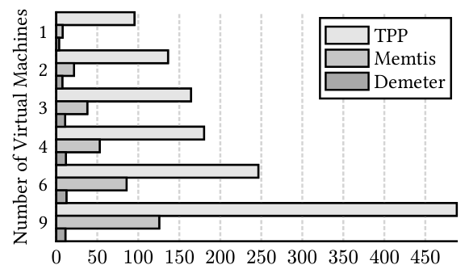
What it shows. On a 36-core system with 36 GiB DRAM and unlimited PMEM, the paper runs 1 to 9 concurrent GUPS VMs (8.1 billion transactions total, 126 GiB combined working set split evenly) and measures access-tracking CPU overhead as a percentage of total CPU. TPP (PTE.A/D scanning) and Memtis (PEBS with a dedicated polling thread) are compared against Demeter.
What to take from it. At nine VMs, naive guest-side TPP wastes more than 4.5 of the system's 36 CPU cores; Memtis, despite using PEBS, still wastes about 1.25 cores because of its dedicated collection threads. Demeter's context-switch-driven sampling keeps overhead within about 0.2 cores across the whole range, showing that how PEBS is integrated, not just whether it is used, determines scalability in a multi-tenant host.
Tier-aware ballooning recovers the throughput a tier-unaware balloon loses
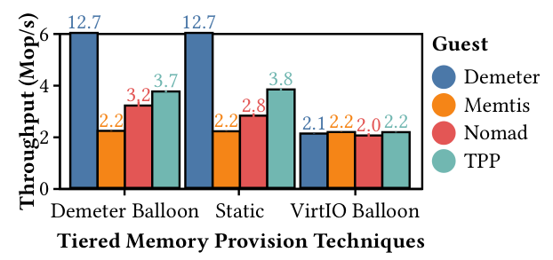
What it shows. With nine concurrent GUPS VMs, both FMEM and SMEM virtual NUMA nodes are sized to 100% of memory and then resized to the target 1:5 ratio, once using the tier-aware Demeter balloon and once using a standard VirtIO balloon, each paired with several guest TMM schemes (Demeter, Memtis, Nomad, TPP).
What to take from it. Demeter balloon delivers 68% higher throughput than VirtIO balloon paired with TPP, matching the throughput of a statically (fixed) provisioned VM while still supporting dynamic resizing. The paper attributes VirtIO balloon's loss to a lack of tier awareness: its inflation logic conflicts with the guest's memory allocator and ends up favoring FMEM reservation over the requested SMEM adjustment, leaving too little FMEM for hot data even when guest TMM is enabled. Demeter balloon's modular design was also verified with TPP, Nomad and Memtis, each reaching performance comparable to static allocation.
Demeter's tracking overhead is far lower, with less total pipeline cost
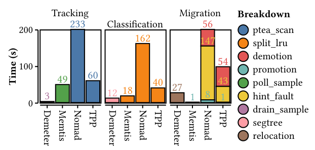
What it shows. With nine concurrent GUPS VMs, the paper breaks down total time spent in tracking, classification, and migration for Demeter, Memtis, Nomad, and TPP.
What to take from it. Demeter's context-switch-based sample draining consumes about three seconds of CPU time, a 16 times reduction versus Memtis's dedicated collection threads; TPP and Nomad, which rely on exhaustive page-table walks and PTE.A/D scanning, cost more still, with even TPP (the more efficient of the two) 1.2 times Memtis's tracking overhead despite producing less accurate hotness data. For classification, Demeter identifies more hot data while spending only about two-thirds the overhead of the next best alternative. For migration, Demeter's one-to-one balanced relocation costs only about 28% of TPP's overhead, since TPP spends close to half its runtime on software page-fault handling and Nomad loses even more time to page faults during its shadow-copy setup; Memtis shows almost no migration overhead only because its classifier fails to find enough hot pages to move, which shows up instead as a much longer total execution time.
PEBS beats both PTE.A/D scanning and PML as a tracking primitive
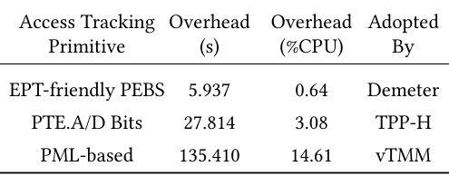
What it shows. Table 3 isolates just the access-tracking primitive (disabling classification and migration) for a nine-VM, 126 GiB GUPS workload on a DRAM-only configuration, comparing EPT-friendly PEBS (used by Demeter), PTE.A/D bit scanning (used by TPP-H), and Page Modification Logging, PML (the mechanism vTMM relies on, reimplemented by the authors since vTMM's code is unavailable). PEBS costs 5.937 s (0.64% CPU); PTE.A/D bits cost 27.814 s (3.08% CPU); PML costs 135.410 s (14.61% CPU).
What to take from it. PML is 4.7 times costlier than PTE.A/D scanning in this isolated test, because its hardware triggers a VM-exit every fixed 512 page modifications regardless of workload and still requires the same TLB-flush-inducing PTE.A/D resets to detect further accesses; the paper argues even a future, selectively filtered PML would not remove the underlying TLB-flush cost. EPT-friendly PEBS avoids both the fixed VM-exit cadence and the TLB-flush dependency entirely.
Real workloads: up to 2.2 times faster, 28% faster on average than the next best guest-based design
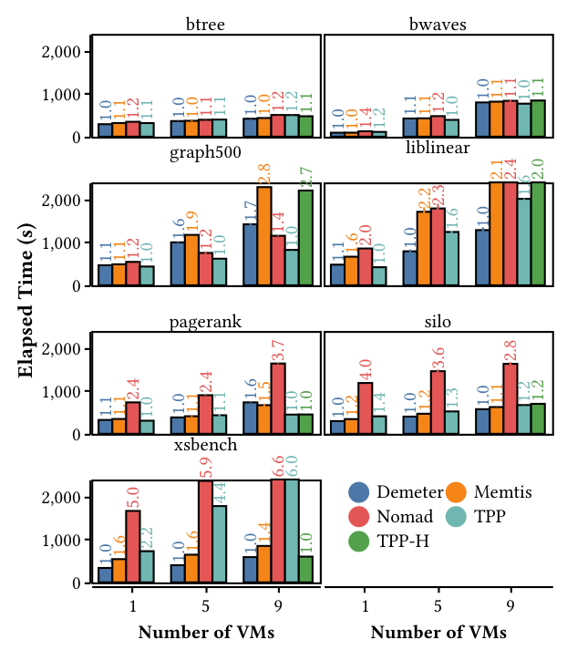
What it shows. Seven real-world workloads (btree, bwaves, graph500, LibLinear, PageRank, Silo, XSBench) run with 1, 5, and 9 concurrent VMs on DRAM+real PMEM, comparing elapsed time for Demeter, Memtis, Nomad, TPP, and the hypervisor-based TPP-H, with relative speedups labeled per bar.
What to take from it. Against the best guest-based alternative (TPP), Demeter achieves up to 2.2 times improvement overall and 28% on average (geometric mean) across the seven workloads. The gains vary by access pattern: on uniform workloads (btree, bwaves) Demeter still finds subtle hotspots (traversal hubs, active computation regions) for up to 20% improvement; on workloads with static hotspots (XSBench, LibLinear) it reaches up to 6.6 times over Nomad and over 40% over Memtis on XSBench; on Silo's dynamic, shifting hotspot it holds at least a 10% lead over Memtis (the second-best) and up to 4 times over Nomad; on skewed graph workloads (graph500, PageRank) Demeter is second-best, closely trailing TPP. Against hypervisor-based TPP-H specifically, Demeter wins on six of seven workloads (up to 2 times on dynamic hotspots, 20% on static hotspots, 10% on uniform access) and loses only on PageRank (60% slower), for a 16% average (geometric mean) advantage overall; notably, guest-based TPP beats hypervisor-based TPP-H in every workload, reinforcing that the delegation principle itself, not just Demeter's specific design, matters.
The advantage persists on emulated CXL.mem, a smaller DRAM/SMEM gap
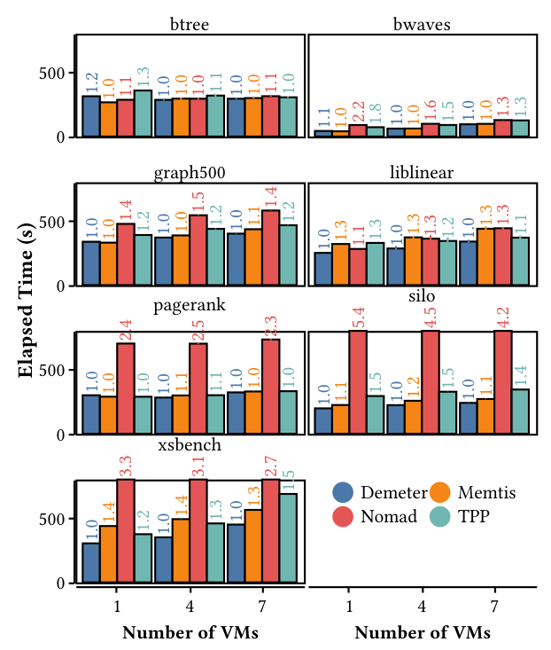
What it shows. The same seven workloads and VM counts, with PMEM replaced by emulated CXL.mem (remote NUMA memory, following the Pond methodology), which narrows the latency gap between tiers compared to PMEM.
What to take from it. Even with a smaller performance gap between FMEM and SMEM, Demeter keeps at least a 10% advantage over TPP, the next-best alternative, on workloads with well-defined static or dynamic hotspots (Silo, LibLinear, XSBench), indicating the classifier's benefit is not an artifact of PMEM's specific latency profile.
Lower tail latency for an interactive OLTP workload
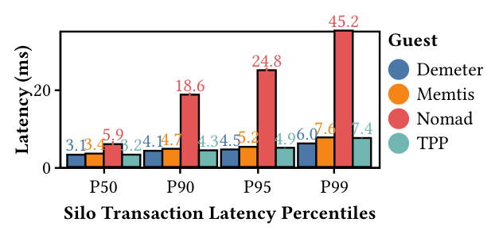
What it shows. Running Silo under a YCSB workload across concurrent VMs, the paper reports P50, P90, P95, and P99 transaction latency in milliseconds for Demeter against Memtis, Nomad, and TPP.
What to take from it. Demeter reduces P99 latency by 23% compared to TPP, the next-best alternative, and holds the best latency at every lower percentile (P50 to P95) tested, by at least 0.1 ms. For a service like Silo where cloud SLAs often specify tail-latency bounds, consistently winning at P99 while also winning in the common case is a stronger result than an average-latency or throughput number alone would show.
FAQ
Q·What does "guest delegation" actually change?▾
In prior virtualized tiering systems, the hypervisor decides which guest pages are hot and moves them. In Demeter, the guest kernel does all of that (tracking, classification, migration) using its own view of virtual addresses and PEBS samples; the hypervisor's job shrinks to handing out and resizing FMEM/SMEM capacity for each VM.
Q·How is this different from just running TPP or Memtis inside the guest?▾
Running existing kernel-based tiering inside a guest is one point on Demeter's design space (the paper tests "TPP-G" and guest Memtis directly) and it already beats hypervisor-based tracking. But those designs were built for a single bare-metal kernel, not for many guests sharing a host; their tracking threads and page-table scans compound as VM count grows. Demeter redesigns tracking (context-switch draining of EPT-friendly PEBS), classification (range-based, segment-tree-like, in virtual address space) and migration (balanced one-to-one relocation) specifically to keep per-VM overhead flat.
Q·Why can't the hypervisor just read PTE.A/D bits itself?▾
It can, and that is what hypervisor-based systems do, but the hypervisor only ever sees guest-physical and host-physical addresses in EPT entries, never the guest virtual address. Without the virtual address, it cannot issue a cheap single-address TLB invalidation after resetting a bit, so it must fall back to invalidating the entire EPT, which the paper measures at 4.7 times more flush instructions and 2.5 times the runtime of a guest-side equivalent.
Q·Wasn't PEBS supposed to be unusable inside a VM?▾
That was the prevailing assumption in prior tiered-memory papers, based on an architectural bug where a PEBS buffer write could not survive being interrupted by an EPT page fault, a real risk under memory overcommitment where EPT entries are mapped lazily. That bug was fixed with PEBS version 5. The paper also traces a second, separate worry (that guest samples would leak into the host's shared buffer) to a misunderstanding of the hardware: the buffer is guest-private, switched automatically through the vmcs.debugctl field.
Q·If PEBS runs in the guest, can one VM see another VM's memory accesses?▾
No. Each VM's PEBS configuration lives in its own portion of the Virtual Machine Control Structure (VMCS) and the hardware switches to a VM-private PEBS buffer on every VM-entry. Samples generated while running one VM are written only into that VM's buffer.
Q·Why classify hotness in virtual address space instead of physical address space?▾
Physical page allocation is driven by when a page was first touched and by fragmentation-avoidance heuristics, not by where it sits relative to other hot data. The paper's own DAMON profiling of LibLinear shows hot accesses forming small, contiguous clusters in virtual address space but scattered widely in physical address space, so classifying in physical addresses throws away exactly the locality information that makes range-based grouping useful.
Q·What is the "double balloon" and why not use existing memory hot-plug or ballooning?▾
Standard memory hot-plug works at coarse block granularity (128 MiB on x86-64, 1 GiB on aarch64) and standard memory balloons are not tier-aware, so a request to shrink the slow tier can accidentally reclaim fast-tier pages, which is exactly what the paper observes causes VirtIO balloon to under-provision FMEM. The Demeter balloon gives each tier (exposed to the guest as a virtual NUMA node) its own balloon with page-granular, fully asynchronous inflation and deflation, up to 100% of total memory each, so the hypervisor can resize tiers precisely without disturbing the other tier.
Q·Does the application need to change?▾
No. Guest-delegated TMM is implemented as a kernel module; applications see ordinary memory and are unaware that some of their pages live in a slower tier. Guest OS changes are confined to a vendor kernel distribution, which the paper notes preserves application transparency.
Q·Does per-VM tracking overhead add up as more VMs are packed onto a host?▾
This is exactly what the scalability experiment (Figure 2) tests. Naive guest-side PTE.A/D scanning (TPP) wastes over 4.5 of 36 CPU cores at nine VMs, and even guest PEBS with a dedicated thread (Memtis) wastes about 1.25 cores. Demeter's context-switch-integrated sampling holds overhead to about 0.2 cores across the same range, because it adds no dedicated polling thread and avoids the Performance Monitoring Interrupts caused by PEBS buffer overshoot.
Q·How does page migration avoid needing a spare page?▾
Demeter pairs every page it wants to promote to FMEM with exactly one page it wants to demote to SMEM, then unmaps both, swaps their contents directly, and remaps them. Because promotion and demotion always happen in matched pairs, there is no need for an intermediate free page, unlike schemes that demote to a temporary buffer page first, which can trigger kernel page reclamation and sometimes cascading demotion of hot pages under memory pressure.
Q·What does Demeter not handle well?▾
Two things by the paper's own account: access skew within a single hugepage (Demeter keeps a 2 MiB minimum classification granularity to preserve TLB benefits, so it cannot see hot/cold variation smaller than that without an administrator lowering the threshold), and the kernel's file page cache, which lives in physical address space outside guest virtual-address tracking; the paper argues even imprecise placement of page cache data in SMEM still beats paying for disk I/O.
Q·Does Demeter work for bare-metal cloud instances?▾
The paper argues yes, and better than hypervisor-based alternatives: bare-metal VMs expose physical memory directly to the tenant with a stripped-down or offloaded hypervisor, which removes the host's ability to manage guest memory placement at all. Since Demeter's TMM logic runs entirely inside the guest kernel, it is unaffected by this, whereas hypervisor-based tiering has no foothold in that setting.
Q·How does this compare to fully hardware-managed options like Optane Memory Mode?▾
Hardware-only approaches (Intel's PMEM Memory Mode, Flat Memory Mode) manage placement without any software visibility, at the cost of losing usable capacity (Memory Mode) or causing inter-VM performance interference (Flat Memory Mode), per the papers Demeter cites. Demeter keeps placement decisions in software (the guest kernel) where they can be workload-aware and tier-elastic, while still using a hardware mechanism (PEBS) for low-overhead tracking.